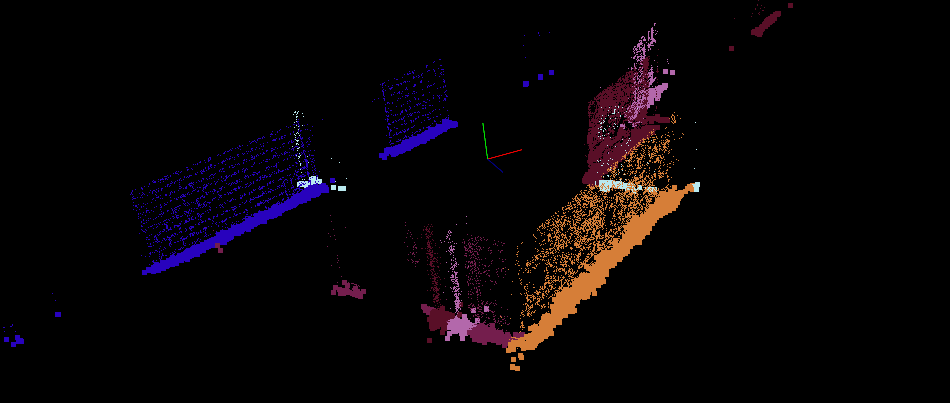

Projects
Photography

Floorplan Scanner
This project examines techniques for creating architectural drawings using photogrammetry, culminating in the creation of an automated pipeline capable of generating architectural floor plans from video scans.